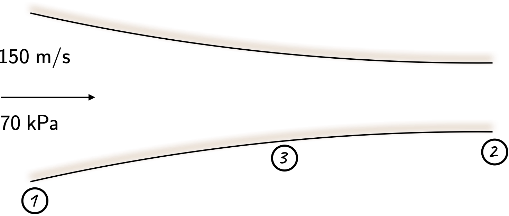
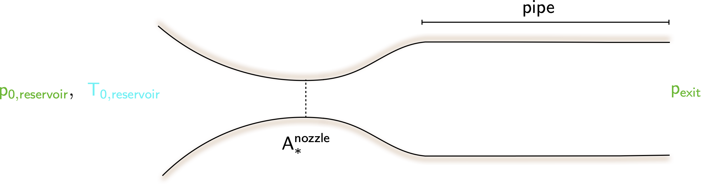
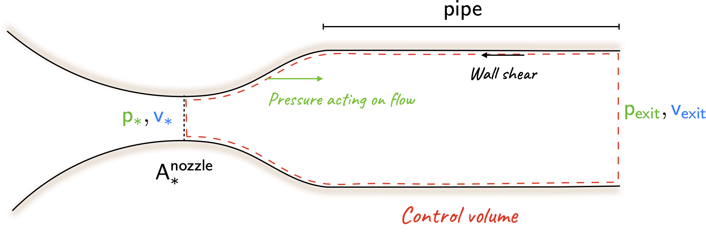
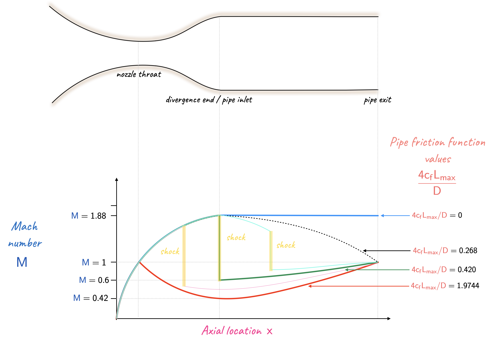
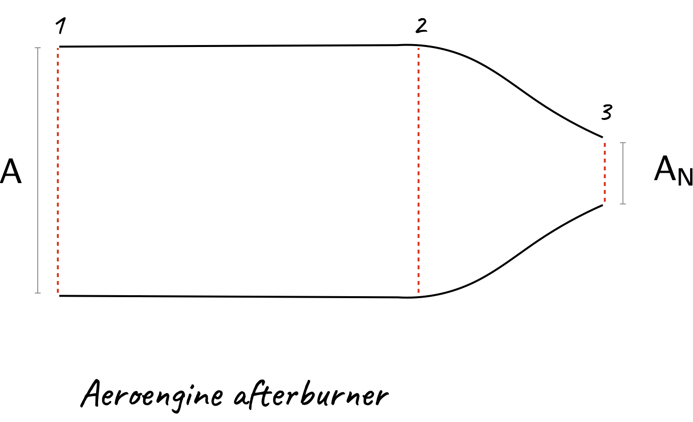
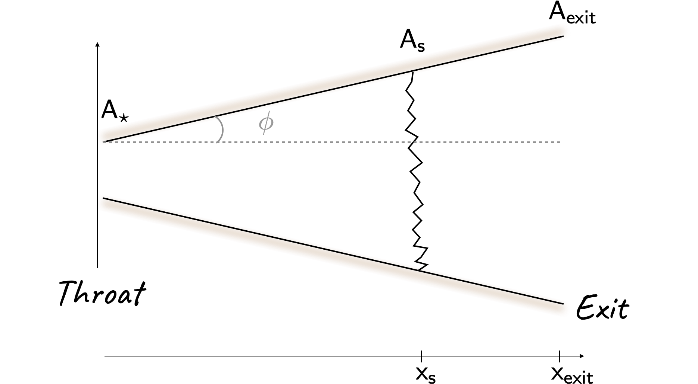

Compressible fluid mechanics
Problem 1
At a certain point in a converging passage, air flows steadily with a velocity of \(\require{color}{\color[rgb]{0.000066,0.001801,0.998229}150 \; m/s}\) and has a static pressure of \(\require{color}{\color[rgb]{0.315209,0.728565,0.037706}70 \; kPa}\) and a static temperature of \(\require{color}{\color[rgb]{0.164799,0.878862,0.723179}4^{\circ} \; C}\). The flow is adiabatic and reversible. Calculate the maximum possible reduction in area and the following quantities for the minimum area: Mach number, stagnation pressure, stagnation temperature, static pressure, static temperature and velocity.
Solution
It will be useful to consider the diagram in Figure below. The Mach number can be computed via

\[ \require{color} \large {\color[rgb]{0.041732,0.352132,0.699576}M_1} = \frac{{\color[rgb]{0.000066,0.001801,0.998229}150}}{\sqrt{1.4 \times 287 \times {\color[rgb]{0.164799,0.878862,0.723179}277.15} }} = 0.449 \approx 0.450 \]
Now, from the tables, at this Mach number we have
\[ \require{color} \large \frac{{\color[rgb]{0.315209,0.728565,0.037706}p_{1}} }{{\color[rgb]{0.315209,0.728565,0.037706}p_{0,1}} } = 0.8703, \; \; \; \; \frac{{\color[rgb]{0.164799,0.878862,0.723179}T_1}}{{\color[rgb]{0.164799,0.878862,0.723179}T_{0,1}}} = 0.9611, \; \; \; \; \frac{\dot{m}\sqrt{{\color[rgb]{0.986252,0.007236,0.027423}c}_{\color[rgb]{0.315209,0.728565,0.037706}p} T_0}}{A_1 {\color[rgb]{0.315209,0.728565,0.037706}p_{0,1}} } = 0.8843 \]
Note that the maximum possible reduction in area occurs if \({\color[rgb]{0.041732,0.352132,0.699576}M_2}={\color[rgb]{0.041732,0.352132,0.699576}1}\), where
\[ \require{color} \large \frac{\dot{m}\sqrt{{\color[rgb]{0.986252,0.007236,0.027423}c}_{\color[rgb]{0.315209,0.728565,0.037706}p} {\color[rgb]{0.164799,0.878862,0.723179}T_{0,1}} }}{A_{2} {\color[rgb]{0.315209,0.728565,0.037706}p_{0,1}} } = 1.281 \]
We can express the area ratio as
\[ \require{color} \large \frac{A_{2}}{A_1} = \frac{\frac{\dot{m}\sqrt{{\color[rgb]{0.986252,0.007236,0.027423}c}_{\color[rgb]{0.315209,0.728565,0.037706}p} {\color[rgb]{0.164799,0.878862,0.723179}T_{0,1}} }}{A_{2} {\color[rgb]{0.315209,0.728565,0.037706}p_{0,1}} }}{\frac{\dot{m}\sqrt{{\color[rgb]{0.986252,0.007236,0.027423}c}_{\color[rgb]{0.315209,0.728565,0.037706}p} {\color[rgb]{0.164799,0.878862,0.723179}T_{0,1}} }}{A_{1} {\color[rgb]{0.315209,0.728565,0.037706}p_{0,1}} }} = \frac{0.8843}{1.281} = 0.6903 \]
This corresponds to a reduction in the area of \(100 - 69.03 = 30.1\%\). Furthermore, given the values of the static quantities, and the static-to-stagnation ratios above, we can determine:
\[ \require{color} \large {\color[rgb]{0.315209,0.728565,0.037706}p_{0,1}} = \frac{{\color[rgb]{0.315209,0.728565,0.037706}p_1} }{0.8703} = \frac{{\color[rgb]{0.315209,0.728565,0.037706}70 \; kPa}}{0.8703} = {\color[rgb]{0.315209,0.728565,0.037706}80.432 \; kPa}, \]
and
\[ \require{color} \large {\color[rgb]{0.164799,0.878862,0.723179}T_{0,1}} = \frac{{\color[rgb]{0.164799,0.878862,0.723179}T_1}}{0.9611} = \frac{{\color[rgb]{0.164799,0.878862,0.723179}277.15 \; K}}{0.9611} = {\color[rgb]{0.164799,0.878862,0.723179}288.367 \; K}. \]
At \({\color[rgb]{0.041732,0.352132,0.699576}M_2}={\color[rgb]{0.041732,0.352132,0.699576}1}\), the table gives \({\color[rgb]{0.315209,0.728565,0.037706}p_{2}} / {\color[rgb]{0.315209,0.728565,0.037706}p_{0,2}} = 0.528\) and \({\color[rgb]{0.164799,0.878862,0.723179}T_{2}}/{\color[rgb]{0.164799,0.878862,0.723179}T_{0,2}} = 0.8333\). As the stagnation pressure and temperature remain constant throughout the passage, we have
\[ \require{color} \large {\color[rgb]{0.315209,0.728565,0.037706}p_2} = {\color[rgb]{0.315209,0.728565,0.037706}80.432} \times 0.528 = {\color[rgb]{0.315209,0.728565,0.037706}46.46 \; kPa}. \]
Repeating the same step for the static temperature to obtain
\[ \require{color} \large {\color[rgb]{0.164799,0.878862,0.723179}T_2} = {\color[rgb]{0.164799,0.878862,0.723179}288.367} \times 0.8333 = {\color[rgb]{0.164799,0.878862,0.723179}240.296 \; K}. \]
At \({\color[rgb]{0.041732,0.352132,0.699576}M_2}={\color[rgb]{0.041732,0.352132,0.699576}1}\), the velocity is given by
\[ \require{color} \large {\color[rgb]{0.059472,0.501943,0.998465}v_2} = {\color[rgb]{0.041732,0.352132,0.699576}1} \times \sqrt{1.4 \times 287 \times {\color[rgb]{0.164799,0.878862,0.723179}240.296}} = {\color[rgb]{0.059472,0.501943,0.998465}310.72 \; m/s} \]Problem 2
Air is supplied from a reservoir to a convergent-divergent nozzle and from there to a long pipe of constant diameter. The flow may be regarded as adiabatic throughout the whole duct system, inviscid in the nozzle but subject to the influence of friction in the pipe. It will be useful to consider the schematic shown in Figure below.

Show that, if the flow is sonic both at the nozzle throat and at the pipe exit, the ratio of the pressure at the exit to the pressure in the reservoir is fixed and independent of pipe length.
Find the value of this pressure ratio for the case of a nozzle designed to give a supersonic Mach number of \(\require{color}{\color[rgb]{0.041732,0.352132,0.699576}1.88}\) at the end of the divergence.
Show that for a given pressure and temperature in the reservoir, and sonic conditions at the nozzle throat and pipe exit, the net longitudinal force exerted by the flow on the walls of the pipe and the nozzle divergence is independent of pipe length.
Solution
- There are multiple ways to answer this. Perhaps the most intuitive is recognizing that the since the flow is sonic at the throat, from the tables we have the condition that
\[ \large \require{color} \frac{\dot{m} \sqrt{{\color[rgb]{0.986252,0.007236,0.027423}c}_{\color[rgb]{0.315209,0.728565,0.037706}p} {\color[rgb]{0.164799,0.878862,0.723179}T_0}}}{A_{\ast}^{nozzle} {\color[rgb]{0.315209,0.728565,0.037706}p_{0,reservoir}}} = 1.281 \]
Additionally, noting that the flow at the exit is also sonic, we use the non-dimensional flow capacity with the static pressure to assert
\[ \large \require{color} \frac{\dot{m} \sqrt{{\color[rgb]{0.986252,0.007236,0.027423}c}_{\color[rgb]{0.315209,0.728565,0.037706}p} {\color[rgb]{0.164799,0.878862,0.723179}T_0}}}{A^{exit} {\color[rgb]{0.315209,0.728565,0.037706}p_{exit}}} = 2.425. \]
Thus we have
\[ \large \require{color} \frac{{\color[rgb]{0.315209,0.728565,0.037706}p_{exit}}}{{\color[rgb]{0.315209,0.728565,0.037706}p_{0, reservoir}}} = \frac{A_{\ast}^{nozzle}}{A^{exit}} \times \frac{1.281}{2.425} = 0.5282 \frac{A_{\ast}^{nozzle}}{A^{exit}}, \]
where we have used the fact that \(\dot{m}_{nozzle} = \dot{m}_{exit}\) owing to continuity, and \(\mathsf{T_0}\) is constant throughout because the flow is given to be adiabatic. The area ratios correspond to cross-sectional areas, and therefore have no bearing on the length of the pipe.
- If the Mach number at the end of the diverging section is \(\mathsf{1.88}\), we know that from the supersonic flow tables
\[ \large \require{color} \frac{\dot{m} \sqrt{{\color[rgb]{0.986252,0.007236,0.027423}c}_{\color[rgb]{0.315209,0.728565,0.037706}p} {\color[rgb]{0.164799,0.878862,0.723179}T_0}}}{A_{diverging} {\color[rgb]{0.315209,0.728565,0.037706}p_{0, diverging}}} = 0.8368 \]
But note that the area at the end of the diverging section is the same as the area of the pipe, and thus area of the exit.In this case, we assume that there is no shock between the reservoir and the end of divergence. Thus \(\require{color}{\color[rgb]{0.315209,0.728565,0.037706}p_{0,diverging}} = {\color[rgb]{0.315209,0.728565,0.037706}p_{0,reservoir}}\), and also note that \(A^{exit} = A^{diverging}\)
\[ \large \require{color} \frac{A^{exit} {\color[rgb]{0.315209,0.728565,0.037706}p_{exit}}}{\dot{m} \sqrt{{\color[rgb]{0.986252,0.007236,0.027423}c}_{\color[rgb]{0.315209,0.728565,0.037706}p} {\color[rgb]{0.164799,0.878862,0.723179}T_0}}} \times \frac{\dot{m} \sqrt{{\color[rgb]{0.986252,0.007236,0.027423}c}_{\color[rgb]{0.315209,0.728565,0.037706}p} {\color[rgb]{0.164799,0.878862,0.723179}T_0}}}{A^{diverging} {\color[rgb]{0.315209,0.728565,0.037706}p_{0, diverging}}} = \frac{{\color[rgb]{0.315209,0.728565,0.037706}p_{exit}}}{{\color[rgb]{0.315209,0.728565,0.037706}p_{0, diverging}}} = \frac{0.8368}{2.425} = 0.345 \]
- Consider the control volume shown below.

From the conservation of momentum,
\[ \large \require{color} -\textsf{net force due to walls} + {\color[rgb]{0.315209,0.728565,0.037706}p_{\ast}}A_{\ast} - {\color[rgb]{0.315209,0.728565,0.037706}p_{exit}}A_{exit} = {\color[rgb]{0.315209,0.728565,0.037706}p_{exit}}{\color[rgb]{0.059472,0.501943,0.998465}v^2_{exit}}A_{exit} - {\color[rgb]{0.315209,0.728565,0.037706}p_{\ast}}{\color[rgb]{0.059472,0.501943,0.998465}v^2_{\ast}}A_{\ast} \]
The net force due to the walls is zero because the pressure in the divergence balances out the frictional force. This can be observed by noting that the non-dimensional impulse function is the same for a pipe with an exit Mach number of one, and a duct where the throat is choked. Naturally, this is independent of the pipe length.
Problem 3
(This builds upon Problem 2) For a nozzle designed to give a supersonic Mach number of \(\require{color}{\color[rgb]{0.041732,0.352132,0.699576}1.88}\), calculate the values of \(4c_fL/D\) for the pipe which will give maximum length:
with supersonic flow maintained up to the pipe exit;
with sonic conditions at the nozzle throat;
with supersonic flow throughout the nozzle divergence.
Explain why the net effect of friction can be the same for different lengths of pipe.
Solution
If the flow continues to remain supersonic to the exit, where the Mach number is unity, the lowest possible value of \(4c_fL/D\) is \(0\). Thus, the highest value is \(0.268\).
If the flow in the nozzle is choked, with subsonic flow in the divergence, we shall get the lowest possible Mach number at the nozzle exit for choked conditions, with the highest value of \(4 c_f L_{max}/D\) for subsonic flow in the pipe. For reversible adiabatic flow through the nozzle, when the Mach number is \(\require{color}{\color[rgb]{0.041732,0.352132,0.699576}1.88}\), the non-dimensional flow capacity was found to be \(0.837\). The same value of the non-dimensional flow capacity can be obtained at a \(\require{color}{\color[rgb]{0.041732,0.352132,0.699576}M} = \require{color}{\color[rgb]{0.041732,0.352132,0.699576}0.420}\), for which \(4 c_f L_{max}/D \approx 1.9744\).
With supersonic flow throughout the nozzle divergence, there will be a shock at the nozzle end. This will yield a low subsonic Mach number a the beginning of the pipe. A \(\mathsf{M=1.88}\) gives a \(\require{color}{\color[rgb]{0.041732,0.352132,0.699576}M_s}={\color[rgb]{0.041732,0.352132,0.699576}0.5996}\) post-shock. Another table look-up (subsonic this time) for the latter Mach number yields \(4c_fL_{max}/D = 0.4908\).
A quick table look-up for Mach numbers of \(\require{color}{\color[rgb]{0.041732,0.352132,0.699576}1.88}\) and \(\require{color}{\color[rgb]{0.041732,0.352132,0.699576}0.60}\) reveal that \(\require{color}F/\dot{m}\sqrt{{\color[rgb]{0.986252,0.007236,0.027423}c}_{\color[rgb]{0.315209,0.728565,0.037706}p} {\color[rgb]{0.164799,0.878862,0.723179}T_0}} = 1.0940\). As the stagnation temperature, and massflow rate is the same, the force must be equivalent too. From the above it is clear that case (i) and case (iii) have the same pressure force on flow in the divergence. Therefore, the two cases must have the same friction force. Note that the subsonic flow has a lower average \(\require{color}{\color[rgb]{0.918231,0.469102,0.038229}\rho} {\color[rgb]{0.059472,0.501943,0.998465}v}^2\), hence lower average wall stress, hence a longer pipe is possible.
Extra comment: It may be useful to re-think of this problem in the following light; see the figure below.

Problem 4
An aeroengine afterburner shown below consists of a cylindrical duct of constant cross-sectional area \(A\) followed by a convergent nozzle with a variable exit area \(A_N\). Both the duct and nozzle are frictionless and there are no shocks within the afterburner. The flow can be treated as a perfect gas with the ratio of specific heat capacities \(\gamma = 1.333\) and with the specific heat capacity at constant pressure \(\require{color}{\color[rgb]{0.986252,0.007236,0.027423}c}_{\color[rgb]{0.315209,0.728565,0.037706}p} = {\color[rgb]{0.986252,0.007236,0.027423}1149} \;{\color[rgb]{0.986252,0.007236,0.027423} J/\left( kg \cdot K \right)}\). The inlet stagnation temperature is \(\require{color}{\color[rgb]{0.164799,0.878862,0.723179}T_{01}} = {\color[rgb]{0.164799,0.878862,0.723179}600 \; K}\), the inlet stagnation pressure is \(\require{color}{\color[rgb]{0.315209,0.728565,0.037706}p_{01}}\) is \(\require{color}{\color[rgb]{0.315209,0.728565,0.037706}3 \; bar}\) and the exit static pressure downstream of the nozzle is \(\require{color}{\color[rgb]{0.315209,0.728565,0.037706}1 \; bar}\). It is required that both with and without heat addition the inlet Mach number is \(\require{color}{\color[rgb]{0.041732,0.352132,0.699576}M_1} = {\color[rgb]{0.041732,0.352132,0.699576}0.4}\).

For the case of no heat addition:
calculate the required nozzle area ratio \(A_{N}/A\).
calculate the specific impulse, \(\require{color}{\color[rgb]{1.000000,0.869732,0.000000}F}/ \dot{m}\), at the nozzle exit;
Solution
- Note that since \(\gamma\) is \(1.333\), we will use the
gas-properties.pdftables for this value of \(\gamma\). First note that exit-static-to-inlet-stagnation pressure ratio is given by \(\require{color}{\color[rgb]{0.315209,0.728565,0.037706}p_3} / {\color[rgb]{0.315209,0.728565,0.037706}p_{01}}\). If this value is less than 0.5398, then the flow at the exit may be assumed choked, i.e., \(\require{color}{\color[rgb]{0.041732,0.352132,0.699576}M_3} = {\color[rgb]{0.041732,0.352132,0.699576}1.0}\). From the values given to us, we note
\[ \large \require{color} \frac{{\color[rgb]{0.315209,0.728565,0.037706}p_3}}{{\color[rgb]{0.315209,0.728565,0.037706}p_{01}}} = \frac{{\color[rgb]{0.315209,0.728565,0.037706}1 \; bar}}{{\color[rgb]{0.315209,0.728565,0.037706}3 \; bar}} = 0.333 < 0.5398. \]
As the flow at \(A_N\) is choked, we can use the following values
\[ \large \require{color} \frac{A_N}{A} = \frac{\dot{m} \sqrt{{\color[rgb]{0.986252,0.007236,0.027423}c}_{\color[rgb]{0.315209,0.728565,0.037706}p} {\color[rgb]{0.164799,0.878862,0.723179}T_{01}} }}{{\color[rgb]{0.315209,0.728565,0.037706}p_{01}} A } \times \frac{{\color[rgb]{0.315209,0.728565,0.037706}p_{01}} A_{N} }{\dot{m} \sqrt{{\color[rgb]{0.986252,0.007236,0.027423}c}_{\color[rgb]{0.315209,0.728565,0.037706}p} {\color[rgb]{0.164799,0.878862,0.723179}T_{01}} }} = 0.8427 \times \frac{1}{1.3468} = 0.6257 \]
- The specific impulse, i.e., \(\require{color}{\color[rgb]{1.000000,0.869732,0.000000}F}/ \dot{m}\) can be worked out using
\[ \large \require{color} \frac{{\color[rgb]{1.000000,0.869732,0.000000}F}}{\dot{m}} = \frac{{\color[rgb]{1.000000,0.869732,0.000000}F}}{\dot{m} \sqrt{{\color[rgb]{0.986252,0.007236,0.027423}c}_{\color[rgb]{0.315209,0.728565,0.037706}p} {\color[rgb]{0.164799,0.878862,0.723179}T_0}} } \times \sqrt{{\color[rgb]{0.986252,0.007236,0.027423}c}_{\color[rgb]{0.315209,0.728565,0.037706}p} {\color[rgb]{0.164799,0.878862,0.723179}T_0}}. \]
When \(\require{color}{\color[rgb]{0.041732,0.352132,0.699576}M_3} = {\color[rgb]{0.041732,0.352132,0.699576}1.0}\), this leads to
\[ \large \require{color} \frac{{\color[rgb]{1.000000,0.869732,0.000000}F}}{\dot{m}} = 0.9351 \times \sqrt{{\color[rgb]{0.986252,0.007236,0.027423}c}_{\color[rgb]{0.315209,0.728565,0.037706}p} {\color[rgb]{0.164799,0.878862,0.723179}T_0}} \]
\[ \large \require{color} \Rightarrow \frac{{\color[rgb]{1.000000,0.869732,0.000000}F}}{\dot{m}} = 0.9351 \times \sqrt{{\color[rgb]{0.986252,0.007236,0.027423}1149} \times {\color[rgb]{0.164799,0.878862,0.723179}600} } = 776.4 \; \frac{N \cdot s}{kg} \]
Problem 5
Re-visit Problem 4 when the afterburner is operating: heat is added uniformly along the duct between locations 1 and 2 at a rate of \(\require{color}{\color[rgb]{0.334690,0.296180,0.998454}300} \; {\color[rgb]{0.334690,0.296180,0.998454}kJ}\) per kg of air flowing.
Solution
- As before, to work out the required area ratio, we need to establish whether the nozzle is still choked. Recall from Rayleigh flows that between stations 1 and 2 the specific impulse function will stay the same as there is no net force. Also note that at station 2 there will be a change in the stagnation temperature; this can be worked out:
\[ \require{color} \large {\color[rgb]{0.164799,0.878862,0.723179}T_{02}} = {\color[rgb]{0.164799,0.878862,0.723179}T_{01}} + \frac{{\color[rgb]{0.334690,0.296180,0.998454}q}}{{\color[rgb]{0.986252,0.007236,0.027423}c}_{\color[rgb]{0.315209,0.728565,0.037706}p}} = {\color[rgb]{0.164799,0.878862,0.723179}600} + \frac{{\color[rgb]{0.334690,0.296180,0.998454}300 \times 10^{3} } }{{\color[rgb]{0.986252,0.007236,0.027423}1149}} = {\color[rgb]{0.164799,0.878862,0.723179}861.1 \; K } \]
At a Mach number of \(\require{color}{\color[rgb]{0.041732,0.352132,0.699576}0.4}\), we have
\[ \large \require{color} \frac{{\color[rgb]{1.000000,0.869732,0.000000}F}_{1}}{\dot{m} \sqrt{{\color[rgb]{0.986252,0.007236,0.027423}c}_{\color[rgb]{0.315209,0.728565,0.037706}p} {\color[rgb]{0.164799,0.878862,0.723179}T_{01}} }} = 1.2959 \]
Now, since the specific impulse between stations 1 and 2 are the same we can write
\[ \large \require{color} \frac{{\color[rgb]{1.000000,0.869732,0.000000}F_2}}{\dot{m} \sqrt{{\color[rgb]{0.986252,0.007236,0.027423}c}_{\color[rgb]{0.315209,0.728565,0.037706}p} {\color[rgb]{0.164799,0.878862,0.723179}T_{02}} }} = \frac{{\color[rgb]{1.000000,0.869732,0.000000}F_1}}{\dot{m} \sqrt{{\color[rgb]{0.986252,0.007236,0.027423}c}_{\color[rgb]{0.315209,0.728565,0.037706}p} {\color[rgb]{0.164799,0.878862,0.723179}T_{01}} }} \times \sqrt{\frac{{\color[rgb]{0.164799,0.878862,0.723179}T_{01}}}{{\color[rgb]{0.164799,0.878862,0.723179}T_{02}}}} = 1.2959 \times \sqrt{\frac{600}{861.1}} = 1.0817 \]
From the tables, this value of the non-dimensional impulse function appears at \(\require{color}{\color[rgb]{0.041732,0.352132,0.699576}M_2} = {\color[rgb]{0.041732,0.352132,0.699576}0.546}\). This leads to
\[ \large \require{color} \frac{A_N}{A} = \frac{\dot{m} \sqrt{{\color[rgb]{0.986252,0.007236,0.027423}c}_{\color[rgb]{0.315209,0.728565,0.037706}p} {\color[rgb]{0.164799,0.878862,0.723179}T_{02}} }}{{\color[rgb]{0.315209,0.728565,0.037706}p_{02}} A } \times \frac{{\color[rgb]{0.315209,0.728565,0.037706}p_{02}} A_{N} }{\dot{m} \sqrt{{\color[rgb]{0.986252,0.007236,0.027423}c}_{\color[rgb]{0.315209,0.728565,0.037706}p} {\color[rgb]{0.164799,0.878862,0.723179}T_{02}} }} = 1.0641 \times \frac{1}{1.3468} = 0.7901 \]
where we have assumed the nozzle is still choked. We need to demonstrate why this is so. Recall, that it will be choked if the pressure ratio \(\require{color}{\color[rgb]{0.315209,0.728565,0.037706}p_3} / {\color[rgb]{0.315209,0.728565,0.037706}p_{03}} < 0.5398\). Note that unlike Problem 3, the flow is no longer isentropic between stations 1 and 2, which is why the denominator has been changed from \(\require{color}{\color[rgb]{0.315209,0.728565,0.037706}p_{01}}\) to \(\require{color}{\color[rgb]{0.315209,0.728565,0.037706}p_{03}}\). To work out this ratio we have recognize that
\[ \large \require{color} \frac{{\color[rgb]{0.315209,0.728565,0.037706}p_3}}{{\color[rgb]{0.315209,0.728565,0.037706}p_{03}}} = {\color[rgb]{0.315209,0.728565,0.037706}p_3} \times \frac{{\color[rgb]{0.315209,0.728565,0.037706}p_{02}}}{{\color[rgb]{0.315209,0.728565,0.037706}p_{03}}} \times \frac{{\color[rgb]{0.315209,0.728565,0.037706}p_{01}}}{{\color[rgb]{0.315209,0.728565,0.037706}p_{02}}} \times \frac{1}{{\color[rgb]{0.315209,0.728565,0.037706}p_{01} }} \]
where we can work out \[ \large \require{color} \frac{{\color[rgb]{0.315209,0.728565,0.037706}p_{02}}}{{\color[rgb]{0.315209,0.728565,0.037706}p_{01}}} = \underbrace{\frac{\dot{m} \sqrt{{\color[rgb]{0.986252,0.007236,0.027423}c}_{\color[rgb]{0.315209,0.728565,0.037706}p} {\color[rgb]{0.164799,0.878862,0.723179}T_{01}} } }{A{\color[rgb]{0.315209,0.728565,0.037706} p_{01}} } }_{at \; {\color[rgb]{0.041732,0.352132,0.699576}M_1}={\color[rgb]{0.041732,0.352132,0.699576}0.4}} \times \underbrace{\frac{A{\color[rgb]{0.315209,0.728565,0.037706} p_{02}} }{\dot{m} \sqrt{{\color[rgb]{0.986252,0.007236,0.027423}c}_{\color[rgb]{0.315209,0.728565,0.037706}p} {\color[rgb]{0.164799,0.878862,0.723179}T_{02}} } } }_{at \; {\color[rgb]{0.041732,0.352132,0.699576}M_2}={\color[rgb]{0.041732,0.352132,0.699576}0.546}} \times \sqrt{\frac{{\color[rgb]{0.164799,0.878862,0.723179}T_{02}}}{{\color[rgb]{0.164799,0.878862,0.723179}T_{01}}}} = 0.8427 \times \frac{1}{1.0641} \times \sqrt{\frac{{\color[rgb]{0.164799,0.878862,0.723179}861.1}}{{\color[rgb]{0.164799,0.878862,0.723179}600}}} = 0.9487. \]
Ordinarily this ratio would be one, however, the flow between stations 1 and 2 is not isentropic (but between stations 2 and 3 it is). Now, we have:
\[ \large \require{color} \frac{{\color[rgb]{0.315209,0.728565,0.037706}p_3}}{{\color[rgb]{0.315209,0.728565,0.037706}p_{03}}} = {\color[rgb]{0.315209,0.728565,0.037706}1 \; bar} \times{\color[rgb]{0.315209,0.728565,0.037706} 1} \times \frac{1}{0.9487} \times \frac{1}{{\color[rgb]{0.315209,0.728565,0.037706}3 \; bar}} = 0.3513 < 0.5398 \]
which tells us that the flow is choked at the nozzle exit, i.e., station 3.
Note that the nozzle area is larger in the case where we have heat transfer.
- The specific heat impulse can now be worked out via
\[ \large \require{color} \frac{{\color[rgb]{1.000000,0.869732,0.000000}F}}{\dot{m}} = \frac{{\color[rgb]{1.000000,0.869732,0.000000}F}}{\dot{m} \sqrt{{\color[rgb]{0.986252,0.007236,0.027423}c}_{\color[rgb]{0.315209,0.728565,0.037706}p} {\color[rgb]{0.164799,0.878862,0.723179}T_{03}}} } \times \sqrt{{\color[rgb]{0.986252,0.007236,0.027423}c}_{\color[rgb]{0.315209,0.728565,0.037706}p} {\color[rgb]{0.164799,0.878862,0.723179}T_{03}}} = 0.9351 \times \sqrt{{\color[rgb]{0.986252,0.007236,0.027423}1149} \times {\color[rgb]{0.164799,0.878862,0.723179}861.1}} = 930.1 \; \frac{N\cdot s}{kg} \]
Problem 6
A converging-diverging nozzle with a throat area of half the exit area is supplied wuth air at a stagnation pressure of \(\require{color}{\color[rgb]{0.315209,0.728565,0.037706}140} \; {\color[rgb]{0.315209,0.728565,0.037706}kPa}\). It discharges into an atmosphere where the static pressure is \(\require{color}{\color[rgb]{0.315209,0.728565,0.037706}100 \; kPa}\). Find the stagnation pressure of the air at the exit from the nozzle, and the Mach number just upstream of the normal shock in the diverging section. If the angle of divergence of the nozzle is constant, find the position of the shock. Assume that the nozzle is 2D and that the throat is choked and that \(\gamma = 1.4\).
Solution
As the throat is choked, we have:
\[ \require{color} \large \frac{\dot{m}\sqrt{{\color[rgb]{0.986252,0.007236,0.027423}c}_{\color[rgb]{0.315209,0.728565,0.037706}p} {\color[rgb]{0.164799,0.878862,0.723179}T_0}}}{A_{\ast} {\color[rgb]{0.315209,0.728565,0.037706}p_{0}}} = 1.281. \]
Since the question refers to the shock in divergence, we assume that the pressure conditions are consistent, i.e., \({\color[rgb]{0.315209,0.728565,0.037706}p_{b}} = {\color[rgb]{0.315209,0.728565,0.037706}p_{e}}\). At the nozzle exit, we have
\[ \require{color} \large \frac{\dot{m} \sqrt{{\color[rgb]{0.986252,0.007236,0.027423}c}_{\color[rgb]{0.315209,0.728565,0.037706}p} {\color[rgb]{0.164799,0.878862,0.723179}T_0}}}{A {\color[rgb]{0.315209,0.728565,0.037706}p}} = \frac{\dot{m}\sqrt{{\color[rgb]{0.986252,0.007236,0.027423}c}_{\color[rgb]{0.315209,0.728565,0.037706}p} {\color[rgb]{0.164799,0.878862,0.723179}T_0}}}{2 A_{\ast} {\color[rgb]{0.315209,0.728565,0.037706}p_{0,\ast}}} \times \frac{{\color[rgb]{0.315209,0.728565,0.037706}p_{0, \ast}}}{{\color[rgb]{0.315209,0.728565,0.037706}p}} \]
\[ \require{color} \large \frac{1}{2} \times 1.281 \times \frac{{\color[rgb]{0.315209,0.728565,0.037706}140}}{{\color[rgb]{0.315209,0.728565,0.037706}100}} = 0.897 \]
From the table this corresponds to a Mach number of \(\require{color}{\color[rgb]{0.041732,0.352132,0.699576}0.40}\) at the exit. From another table look-up we know that \(\require{color}{\color[rgb]{0.315209,0.728565,0.037706}p}/{\color[rgb]{0.315209,0.728565,0.037706}p_0}\) at the exit is \(0.896\). Thus, the stagnation pressure at the exit is \(\require{color}{\color[rgb]{0.315209,0.728565,0.037706}p_{0,exit}} = {\color[rgb]{0.315209,0.728565,0.037706}100} / 0.896 = {\color[rgb]{0.315209,0.728565,0.037706}111.5 \; kPa}\).
Now, the stagnation pressure ratio across the shock is \(\require{color}{\color[rgb]{0.315209,0.728565,0.037706}111.6}/{\color[rgb]{0.315209,0.728565,0.037706}140}=0.797\). From the tables, the Mach number in front of the shock is \({\color[rgb]{0.041732,0.352132,0.699576}1.84}\).
When the Mach number is \(\require{color}{\color[rgb]{0.041732,0.352132,0.699576}1.84}\), the non-dimensional flow capacity is given by
\[ \require{color} \large \frac{\dot{m}\sqrt{{\color[rgb]{0.986252,0.007236,0.027423}c}_{\color[rgb]{0.315209,0.728565,0.037706}p} {\color[rgb]{0.164799,0.878862,0.723179}T_0}}}{A {\color[rgb]{0.315209,0.728565,0.037706}p_{0}}} = 0.863 \]
where the \(\require{color}{\color[rgb]{0.315209,0.728565,0.037706}p_0}\) is the same as at the throat. Thus, we have
\[ \require{color} \large \frac{A_s}{A_{\ast}} = \frac{1.281}{0.863} = 1.484 \]
Assuming a two-dimensional passage with constant angle of divergence, as per the image below (only diverging section shown)

we can write
\[ \require{color} \large tan \left( {\color[rgb]{0.599997,0.600015,0.600005}\phi} \right) = \frac{A_s - A_{\ast} }{x_s} = \frac{A_{exit} - A_{\ast}}{x_{exit} } \]
\[ \large \Rightarrow \frac{A_s - A_{\ast} }{x_s} = \frac{2A_{\ast} - A_{\ast}}{x_{exit} } \]
\[ \require{color} \large \Rightarrow \frac{A_s - A_{\ast} }{x_s} = \frac{A_{\ast}}{x_{exit} } \]
\[ \require{color} \large \Rightarrow \frac{A_s - A_{\ast} }{A_{\ast}} = \frac{x_s}{x_{exit} } \]
\[ \require{color} \large \Rightarrow \frac{A_s}{A_{\ast}} - 1 = \frac{x_s}{x_{exit}} \Rightarrow x_{s} = \left( 1.484 - 1 \right) x_{exit} = 0.484 x_{exit} \]
Thus, the shock is located nearly halfway through the diverging section.